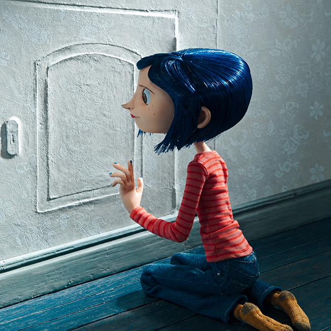

КОРАЛИНА В СТРАНЕ КОШМАРОВ

Страница 2. Дверь в другую жизнь
Иногда самые маленькие двери ведут в самые большие тайны…
За крошечной дверцей Коралина обнаруживает мир, где всё кажется лучше: родители внимательнее, еда вкуснее, а желания исполняются.
Но почему у всех его обитателей вместо глаз - пуговицы?